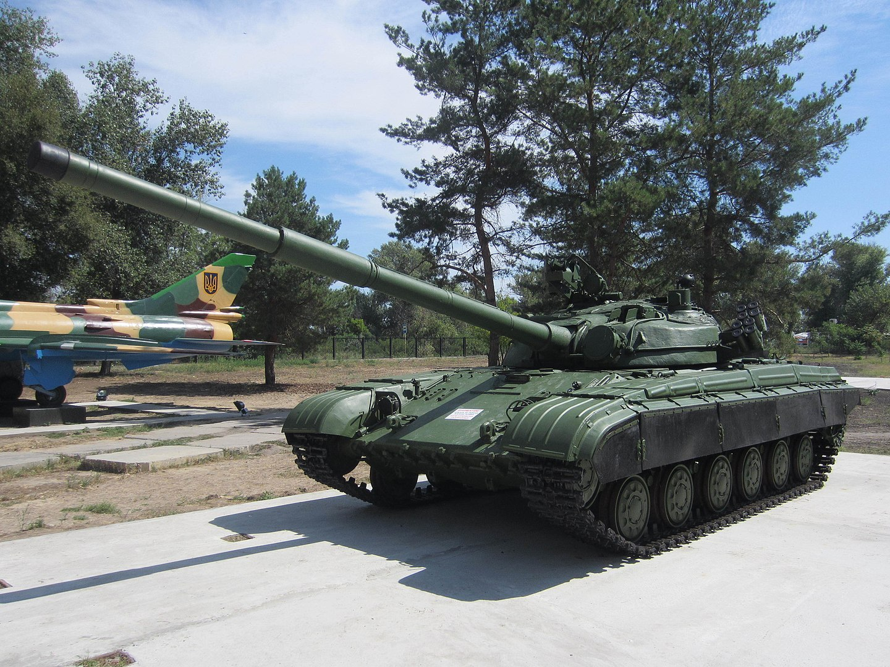
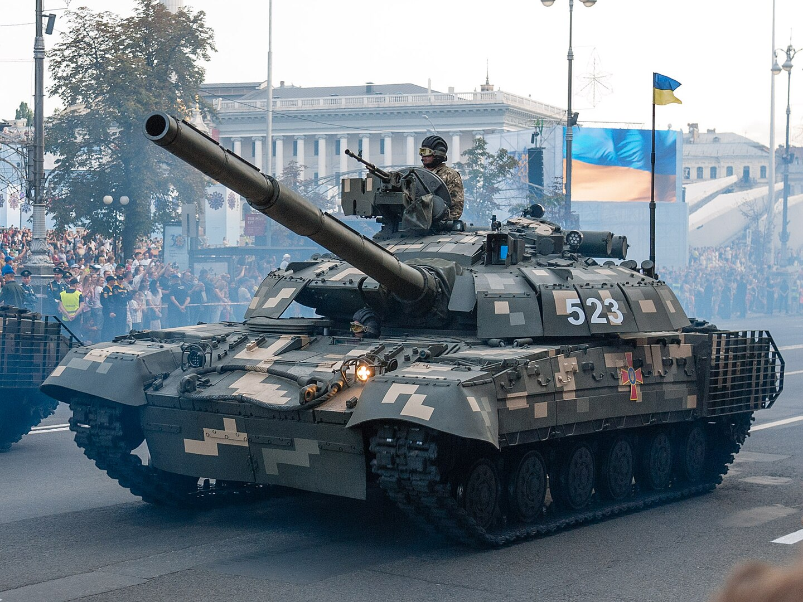

T-64
Це сімейство основних бойових танків другого покоління, що випускалися серійно в СРСР з 1963 по 1987 рік. За цей час було створено близько трьох десятків різних модифікацій танка. Роботи над створенням танка розпочалися в Харкові в 1951 році під керівництвом Олександра Морозова[1]. Перша модифікація — «середній танк Т-64» (об'єкт 432) була прийнята на озброєння в січні 1967 року,[2] модифікація Т-64А (об'єкт 434) стала першим основним бойовим танком Радянського Союзу. Конструкція Т-64 увібрала в себе найновіші розробки того часу, завдяки чому танк з вагою середнього отримав вогневу потужність важкого. Тут вперше була використана композитна броня, стереоскопічний далекомір, опозитний дизельний двигун, гладкоствольна гармата здатна вести вогонь керованими реактивними снарядами[3], вперше для гармати великого калібру встановленій на танк традиційного компонування був створений механізм заряджання, завдяки якому екіпаж скоротився до трьох осіб[4]. Компонування та окремі елементи конструкції були потім використані в танках Т-72, Т-80 та Т-84. Через високу секретність танки Т-64 Радянський Союз на експорт не постачав, і в збройних конфліктах вони участі не брали. Найпе́рше, танки Т-64 всіх модифікацій надходили на озброєння танкових підрозділів Радянської армії, дислокованих в Групі радянських військ у Німеччині. Навіть на військових парадах в Москві танки Т-64 брали участь лише один раз — 9 травня 1985 року[5]. Бойове хрещення відбулось вже після розпаду Радянського Союзу — в боях за місто Бендери під час Придністровського конфлікту в 1992 році[5].
Історія створення
Перші серійні об'єкти 432(Прототипа т64) зійшли з конвеєра Заводу імені В. О. Малишева в жовтні 1963 року. У вересні 1964 року з конвеєра зійшло 54 танка, а до 1 грудня 1965-го їх кількість склала 218 машин, після чого випуск танків постійно збільшувався. Перші танки стали надходити в дослідну експлуатацію на озброєння 41-ї гвардійської танкової дивізії, дислокованої в Чугуєві, неподалік від заводу в Харкові, що випускав ці машини. Це дозволяло надати кваліфіковану заводську допомогу в експлуатації нових машин. Військові випробування об'єкт 432 пройшов успішно. Об'єкт 432 був прийнятий на озброєння Постановою Ради Міністрів СРСР від 30 грудня 1966 року під маркою «середній танк Т-64». Наказ Міністра Оборони СРСР про прийняття танка на озброєння вийшов 2 січня 1967-го. Танк Т-64 (об'єкт 432) випускався серійно до 1969 року. Прийняття на озброєння нового танка вимагало докорінних змін в організаційно-штатній структурі танкових частин і з'єднань, значної зміни рівня підготовки як постійного, так і змінного складу танкістів, і багатьох інших питань — як технічних і військових, так і політичних. Все це стало причиною затягування рішення про прийняття об'єкта 432 на озброєння. Відстрочення рішення з даного питання, крім того, пояснювалося технічною недосконалістю двигуна, трансмісії, озброєння і системи управління вогнем. Важко було розлучитися зі стереотипами мислення і добре налагодженою системою бойової підготовки, постачання і комплектування частин, як особовим складом, так і матеріальною частиною. До того ж Т-64, хоча і перевершував практично за всіма основними показниками Т-55 і Т-62, був у кілька разів дорожче, що теж відігравало важливу роль. Крім того, як і всі принципово нові машини, Т-64 мав цілий ряд «дитячих хвороб», виліковувати які доводилося вже в ході серійного виробництва. У вересні 1967 року 243 танка Т-64 взяли участь у навчаннях «Дніпро» і підтвердили свої високі тактико-технічні можливості в ході форсованих маршів і бойових стрільб
Модифікації
Танк Т-64А («Об'єкт 434») став першим основним бойовим танком СРСР, прийнятим на озброєння у 1968 році. Він відзначався поєднанням рухомості, точності стрільби та скорострільності. Оснащений 125-мм гарматою Д-81, спареним кулеметом та потужним дизельним двигуном 5ТДФ, Т-64А мав вогневу потужність важкого танка при вазі середнього. З 1974 року на танк встановлювали модернізовану гармату Д-81ТМ, підсилене бронювання, автомат заряджання та систему управління вогнем. Особливою рисою була зенітна кулеметна установка НСВ-12,7 з дистанційним керуванням, що дозволяла командиру вести вогонь, не покидаючи броньованої башти. Т-64А випереджав світові танки за рівнем захисту, зокрема від ядерного випромінювання. Його лобова броня витримувала снаряди 105-мм гармат з відстані понад 500 метрів. Планувалося налагодити виробництво на кількох заводах, однак через суперечки Уральський вагонобудівний завод (УВЗ) створив власний танк Т-72, заснований на технічній документації Т-64А. Хоча Т-64А і Т-72 мали схожі характеристики, їхні деталі були несумісними.
Т-64А серійно випускали до 1980 року. Т-64АК (об'єкт 446) — командирський варіант танка Т-64, прийнятий на озброєння у 1973 році. Він мав додаткову радіостанцію Р-130, телескопічну щоглу, навігаційне обладнання ТНА-3 і бензоелектричний зарядний пристрій. У порівнянні з базовим Т-64А, Т-64АК не мав зенітного кулемета «Утёс», а боєкомплект був зменшений до 28 пострілів і 1000 набоїв. Всього було випущено близько 780 одиниць. Т-64Б (об'єкт 447А) — модернізована версія Т-64А, прийнята на озброєння у 1976 році. Він отримав нову башту з багатошаровою бронею та вдосконалену систему керування вогнем 1А33 «Обь». Основною новинкою був комплекс керованої зброї 9М112 «Кобра». Серійний випуск Т-64Б розпочався у 1976 році, а з 1979 року почали встановлювати нову 125-мм гармату 2А46М-1, що підвищило скорострільність до 8 пострілів на хвилину. Виробництво тривало до 1987 року, всього випущено приблизно 4200 одиниць Т-64Б та 1200 одиниць Т-64Б1. Т-64БК (об'єкт 446Б) — командирський варіант Т-64Б, відрізнявся наявністю другої антени на башті. Прийнятий на озброєння у 1976 році. Т-64Б1 (об'єкт 447А) — модифікація Т-64Б, розроблена у 1975 році. Основна відмінність — відсутність комплексу керованої зброї «Кобра». Випускався з 1976 року, мав новий механізм заряджання та нову радіостанцію Р-173. Т-64БВ (об'єкт 447АМ-1) — модифікація з динамічним захистом «Контакт-1», прийнята на озброєння у 1985 році. Перші експерименти з динамічним захистом почалися ще у 1977 році, і в результаті танк Т-64БВ отримав покращений захист від кумулятивних боєприпасів.
Українські модифікації танку
Т-64БМ1 (об'єкт 447АМ1) Т-64БМ1, або Т-64У (об'єкт 447АМ1), — це дослідний зразок модернізації танку Т-64БВ. Вона включає встановлення вбудованого динамічного захисту, комплексу керованого озброєння 9К119 «Рефлекс», а також системи управління вогнем 1А45 «Іртиш», яка є аналогічною до тієї, що встановлена на танках Т-80УД (об'єкт 478Б) і Т-84 (об'єкт 478ДУ2). Танк оснащений механізмом заряджання 6ЕЦ43. Комплекс управління вогнем 1А45 складається з прицільних комплексів 1А43, ТО1-КО1 і ПНК-4, до якого входить командирський приціл ТКН-4С «Агат» з електроблоком і зенітний приціл ПЗУ-7. Ці компоненти дозволяють командиру танка брати на себе управління озброєнням танка. Дослідний екземпляр танка демонструвався на параді в Києві 24 серпня 1999 року. Т-64БМ2 (об'єкт 447АМ2) Т-64БМ2 (об'єкт 447АМ2) — це ще один дослідний зразок модернізації Т-64БВ, що включає вбудований динамічний захист і комплекс керованого озброєння 9К119 «Рефлекс». Система управління вогнем включає прицільний комплекс 1А43 і механізм заряджання 6ЕЦ43. Прицільний комплекс 1А43 складається з прицілу-далекоміра 1Г46 з блоком дозволу пострілу та танковим балістичним обчислювачем 1В528-2. Два модернізованих танка були продемонстровані на параді 24 серпня 1999 року.
БМ «Булат» (об'єкт 447АМ1-1) — це модернізація танка Т-64Б, що включає поліпшення вогневої потужності, захисту та рухомості. В рамках модернізації двигун 5ТДФ (700 к.с.) був замінений на 5ТДФМ (850 к.с.). Також була вдосконалена система управління вогнем з прицілом 1Г46М, нічним комплексом ТО1-КО1ЭR та іншими елементами. Захист посилено динамічною бронею «Ніж», що збільшує захист від кінетичних і кумулятивних засобів ураження.
.jpg)
Т-64Е — це концепт модернізації танка зі встановленим двигуном 5ТДФЕ потужністю 850 к.с. Особливістю є додатковий модуль з двома спареними 23 мм автоматичними гарматами ГШ-23, що дозволяє вести вогонь на відстань до 5000 метрів керованими ракетами «Комбат».
Т-64БВ-1Т-64БВ-1 — спрощений варіант модернізації танків Т-64Б1, розроблений у 2014 році. Танк оснащений динамічним захистом «Ніж», двигуном 5ТДФ, а також модернізованими системами захисту і управління. Перші танки надійшли до Національної гвардії України у 2014 році.
Т-64БВ зразка 2017 року У 2017 році Україна модернізувала танки Т-64БВ. Модернізація включала нові нічні приціли, системи супутникової навігації СН-4215, радіостанції з радіусом дії до 70 км та посилений захист бронею. Понад 200 танків цієї модифікації надійшли до ЗСУ до 2020 року.
Т-64БМ2 «Булат» (програма «Кедр») Т-64БМ2 (також відомий як «Кедр») є модернізацією танка Т-64 за програмою «Кедр». Основні зміни включають установку нового двигуна 6ТД-1 (1000 к.с.) та тепловізійного прицілу. Модернізація покращує рухомість, бойову ефективність і захист танка.
Т-64БВК зразка 2021 року Т-64БВК — глибоко модернізований варіант танка Т-64БВ, що отримав нові цифрові радіостанції, системи нічного бачення та спостереження третього покоління. Танки цієї модифікації також оснащені сучасною системою зв'язку, що відповідає стандартам НАТО, а також додатковим броньованим захистом.
Т-64БВ зразка 2022 року У 2022 році модернізовані Т-64БВ отримали нові прилади спостереження, протикумулятивні екрани, гумові щитки на башті та удосконалену паливну систему.